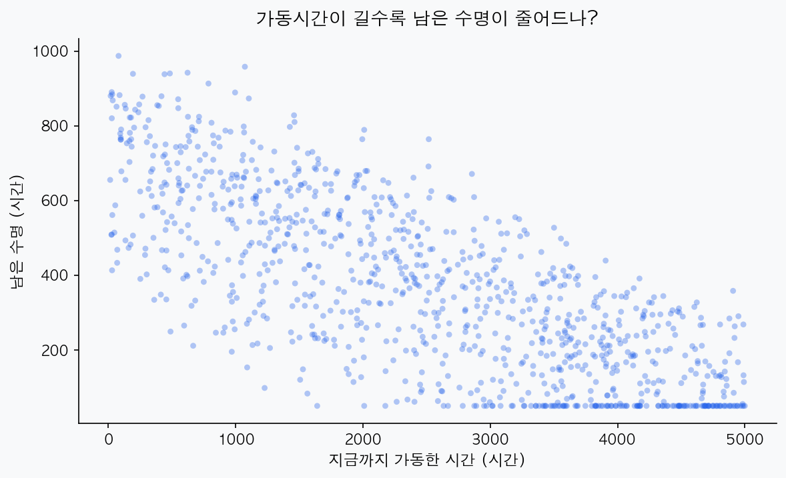
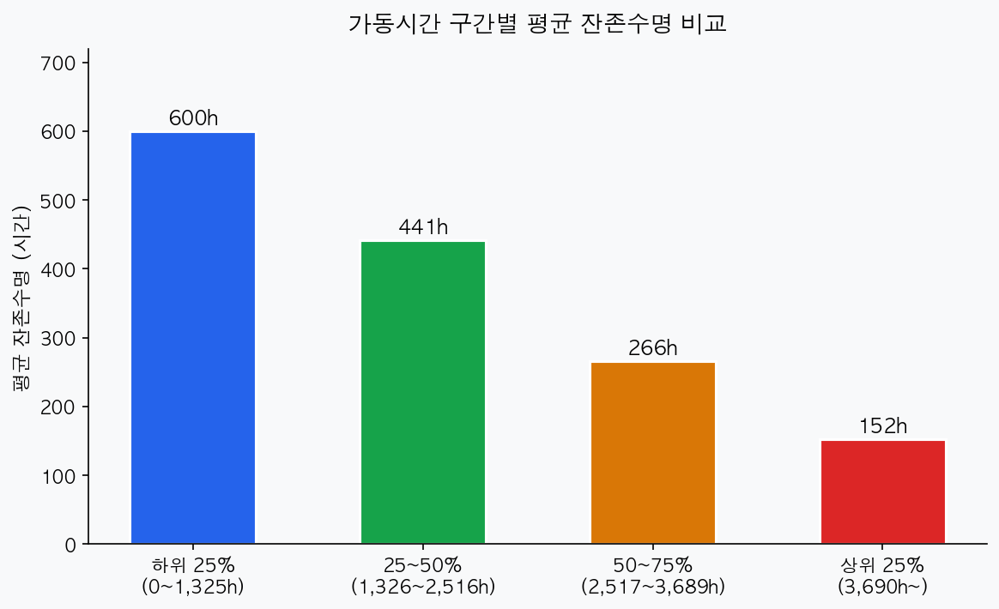
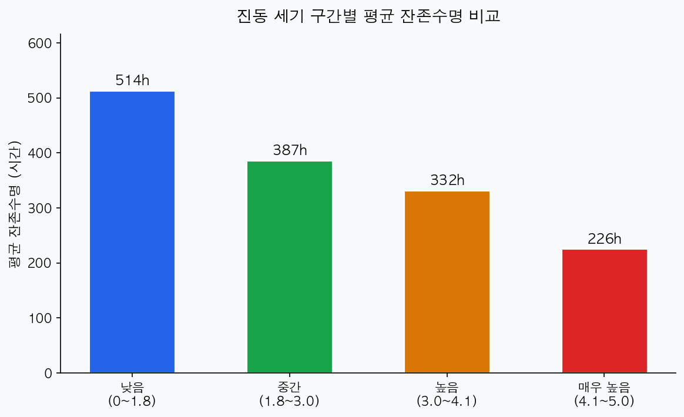
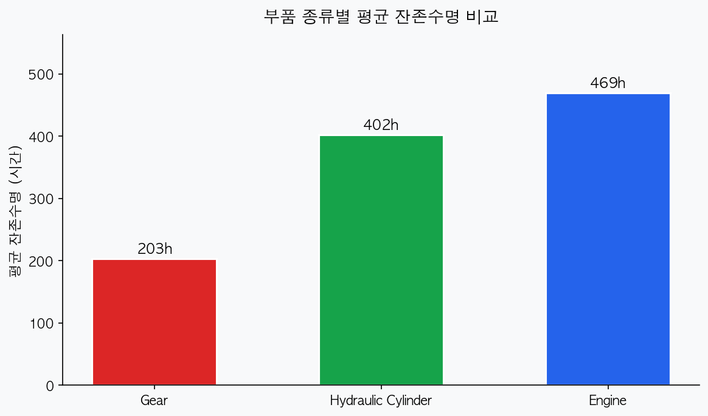
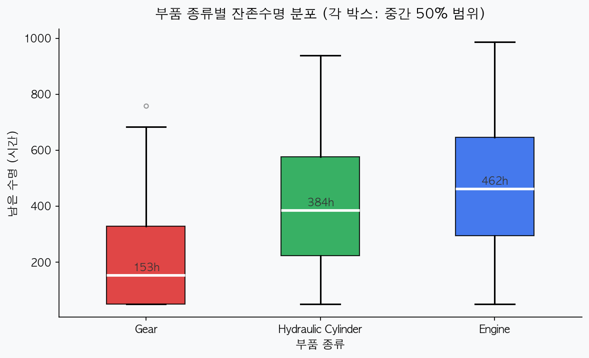
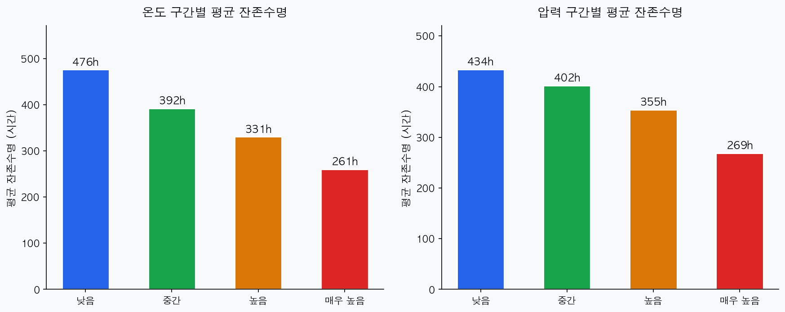
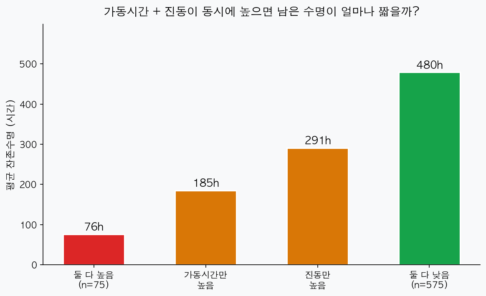
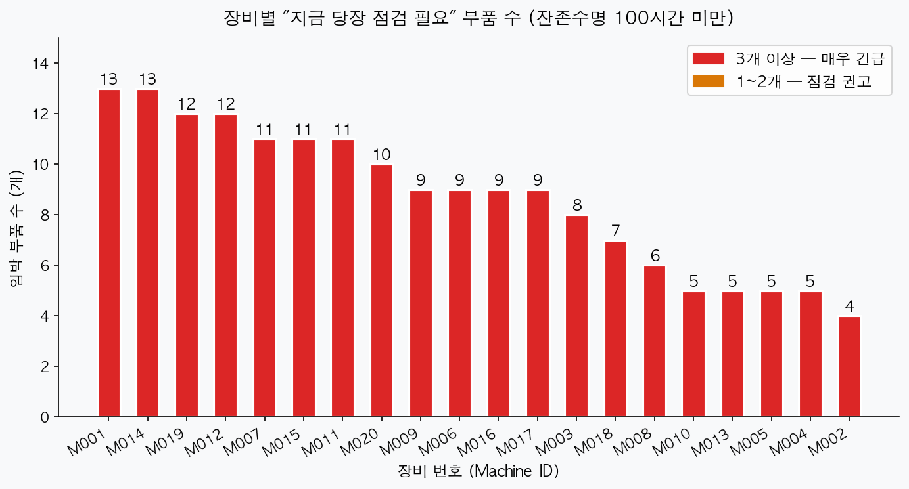

1,000개 부품 데이터로 찾아낸 "지금 당장 위험한 부품"과 예방 점검 우선순위
건설장비가 갑자기 멈추면 복구까지 수억 원이 날아간다. 데이터로 고장 전에 신호를 잡을 수 있을까?
현재 현장에서는 월 3~4건의 돌발 고장이 발생하고 있으며, 건당 약 2억 원의 손실이 발생합니다. 이 분석의 목적은 단 하나입니다. "어떤 부품부터 점검하러 가야 하는가?"를 데이터로 찾아내는 것입니다.
분석 전에 "이럴 것 같다"는 예상을 먼저 세우고, 데이터로 맞는지 틀리는지 확인합니다.
| # | 가설 (예상) | 확인 방법 | 결과 |
|---|---|---|---|
| 1 | 오래 사용한 부품일수록 남은 수명이 짧을 것이다 | 가동시간 구간별 평균 잔존수명 비교 | 채택 |
| 2 | 진동이 심한 부품일수록 남은 수명이 짧을 것이다 | 진동 구간별 평균 잔존수명 비교 | 채택 |
| 3 | 부품 종류에 따라 수명이 다를 것이다 (Gear가 특히 짧을 것) | 부품 타입별 평균 + 분포 비교 | 채택 |
| 4 | 온도·압력이 높아도 수명이 짧을 것이다 | 온도·압력 구간별 평균 잔존수명 비교 | 부분 채택 |
| 5 | 가동시간도 많고 진동도 심하면 훨씬 위험할 것이다 | 두 조건 동시 충족 그룹 vs 나머지 비교 | 채택 |
어떻게 확인했나
부품 1,000개의 가동시간(지금까지 사용한 총 시간)과 잔존수명을 점으로 찍어 산점도를 그렸습니다. 그 다음, 가동시간을 하위 25%, 25~50%, 50~75%, 상위 25%로 나눠 각 구간의 평균 잔존수명을 막대그래프로 비교했습니다.


구간이 하나씩 올라갈 때마다 잔존수명이 눈에 띄게 줄어들었습니다. 특히 상위 25%(가동시간 3,689시간 이상) 구간에서 평균 잔존수명이 152시간으로 뚝 떨어지는 점이 두드러집니다. 가동시간은 점검 우선순위를 결정할 때 가장 먼저 봐야 할 지표입니다.
어떻게 확인했나
진동 수치(0~5)를 낮음·중간·높음·매우 높음 4구간으로 나눠 각 구간의 평균 잔존수명을 비교했습니다. 진동 값이 클수록 부품이 더 심하게 흔들리고 있다는 의미입니다.

진동 수치가 한 단계씩 올라갈 때마다 잔존수명이 꾸준히 줄어들었습니다. 진동 수치 4.1을 넘어가는 부품은 평균 잔존수명이 226시간밖에 남지 않습니다. 현장에서 "기계가 많이 떨린다"는 느낌이 들면 즉시 점검을 검토할 필요가 있습니다.
어떻게 확인했나
Engine, Gear, Hydraulic Cylinder 세 종류의 부품을 따로 모아, 각각의 평균 잔존수명을 막대그래프로 그렸습니다. 그 다음, 개별 부품들의 수명이 어떻게 퍼져 있는지 박스플롯으로 확인했습니다.


박스플롯에서 Gear의 박스가 다른 부품들보다 전체적으로 낮게 위치한 것을 확인할 수 있습니다. 단순히 평균이 낮은 것을 넘어, 잔존수명 분포 자체가 아래쪽에 집중돼 있습니다. Gear 부품은 다른 부품들보다 점검 주기를 짧게 가져가야 합니다.
어떻게 확인했나
온도와 압력을 각각 4구간으로 나눠 구간별 평균 잔존수명을 비교했습니다. "영향이 있는가"와 "얼마나 강한 영향인가"를 함께 확인했습니다.

온도와 압력이 높아질수록 잔존수명이 줄어드는 경향은 확인됐습니다. 그러나 가동시간(4배 차이)이나 진동(2.3배 차이)에 비해 그 폭이 상대적으로 작습니다. 온도·압력은 보조 지표로 참고하되, 점검 우선순위를 결정할 때 주요 기준으로 삼기에는 약합니다. 이 때문에 "부분 채택"으로 판정합니다.
어떻게 확인했나
가동시간 상위 25%(3,689시간 이상)이면서 동시에 진동도 상위 25%(4.1 이상)인 부품을 "복합 위험군"으로 정의했습니다. 이 그룹의 평균 잔존수명을 나머지 세 그룹과 비교했습니다.

가동시간이나 진동 하나만으로는 185h~291h 수준이지만, 두 조건이 동시에 해당되는 75개 부품의 평균 잔존수명은 76시간입니다. 단 하루 10시간씩 운전하면 8일도 안 남은 수명입니다. 두 조건을 동시에 만족하는 부품은 최우선 점검 대상입니다.
어떻게 찾았나
전체 1,000개 부품 중 잔존수명이 100시간 미만인 부품을 골라, 어떤 장비에 몰려 있는지 세었습니다. 임박 부품이 많은 장비를 먼저 방문해야 한 번 이동으로 여러 부품을 점검할 수 있습니다.

잔존수명 100시간 미만 부품이 특정 장비에 집중되어 있음을 확인할 수 있습니다. 상위 5대 장비를 우선 방문하는 것만으로도 임박 부품의 절반 이상을 커버할 수 있습니다.
| 순위 | 장비 번호 | 임박 부품 수 | 긴급도 |
|---|---|---|---|
| 1위 | M001 | 13개 | 🔴 매우 긴급 |
| 2위 | M014 | 13개 | 🔴 매우 긴급 |
| 3위 | M019 | 12개 | 🔴 매우 긴급 |
| 4위 | M012 | 12개 | 🔴 매우 긴급 |
| 5위 | M007 | 11개 | 🟠 긴급 |
| 전체 174개 부품, 20대 장비 모두 1개 이상 해당 | |||
온도와 압력도 잔존수명과 관련이 있지만, 가동시간·진동에 비해 영향 폭이 작아 단독 점검 기준으로 삼기에는 부족합니다. 점검 판단을 내릴 때는 가동시간 → 진동 → 부품 종류(Gear 여부) 순서로 확인하는 것이 효율적입니다.
분석 결과를 실제 점검 계획으로 바꿉니다. 모든 임계값은 이번 데이터 기준이며, 현장 적용 시 전문가와 함께 검토하세요.